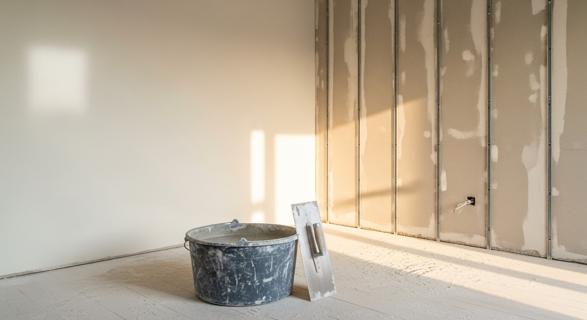
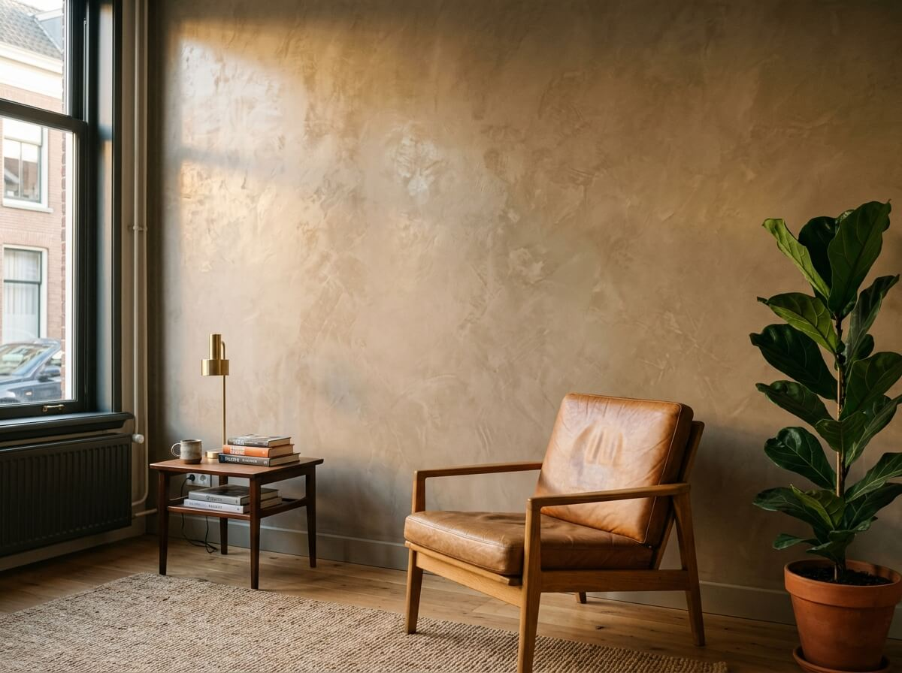
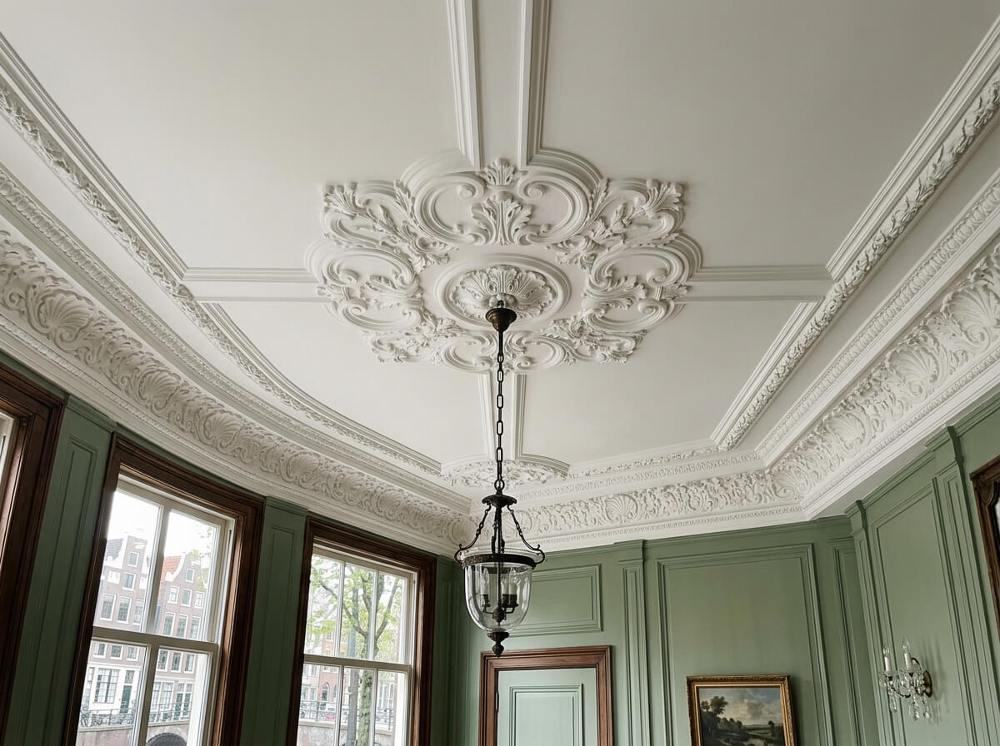
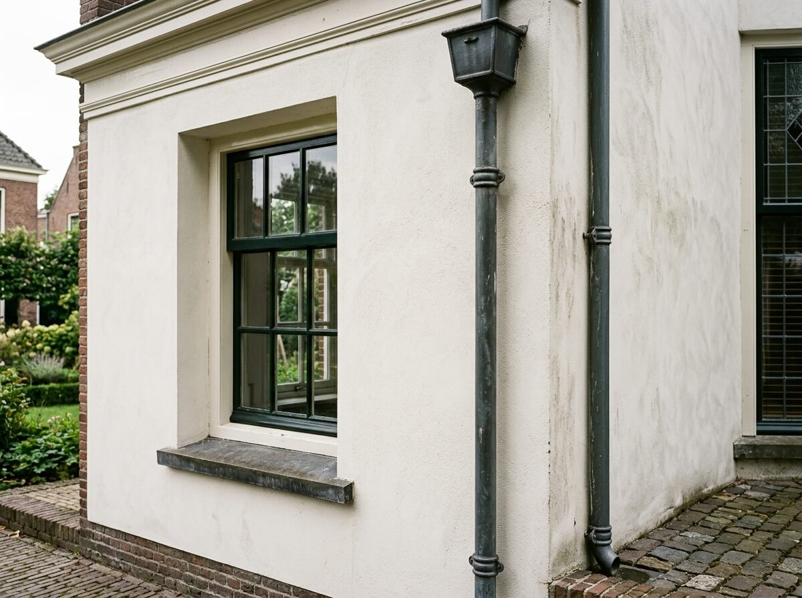
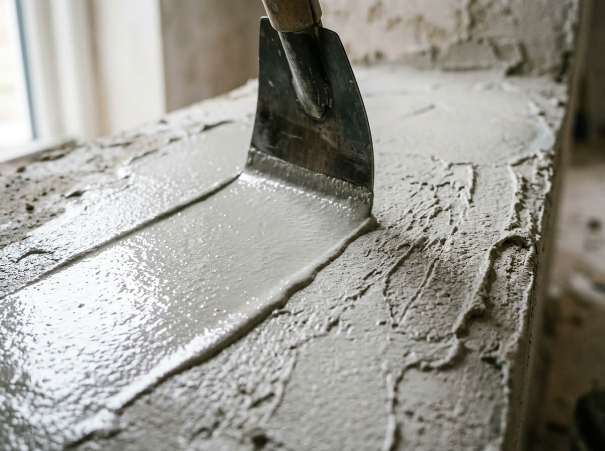
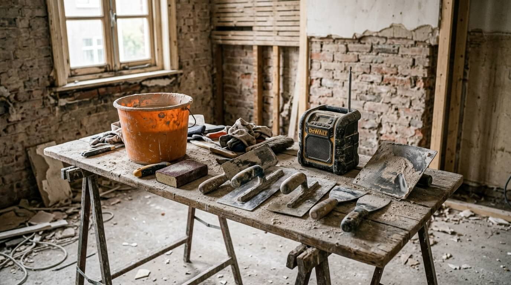
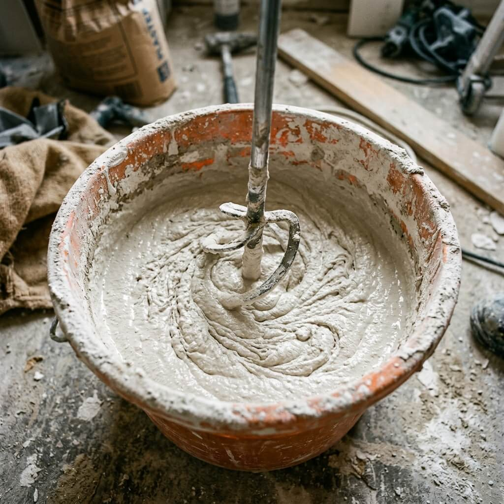
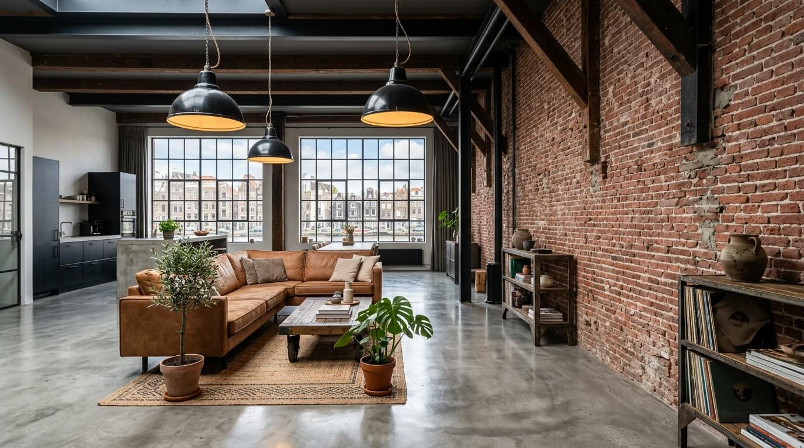
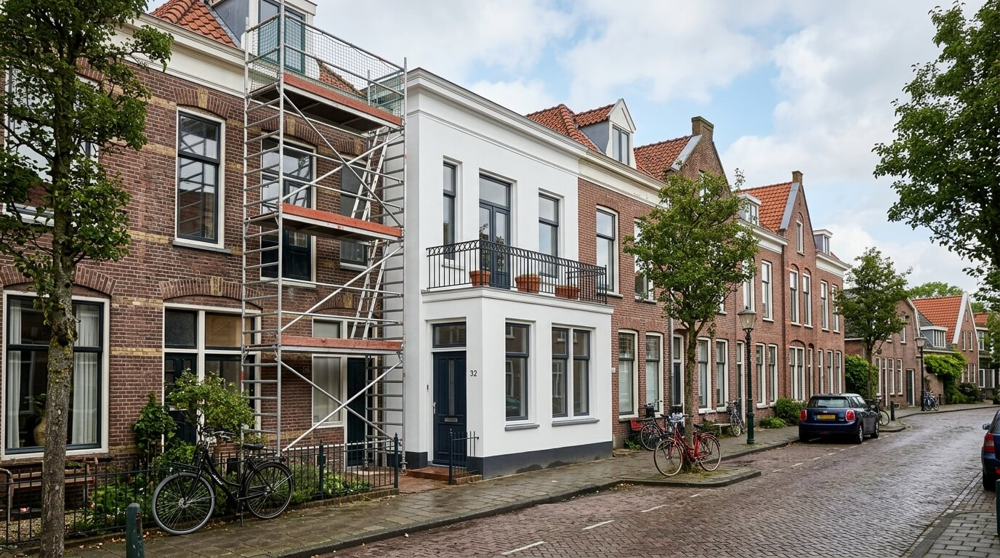

Al meer dan 12 jaar transformeren wij Rotterdamse woningen met stucwerk dat u elke dag blij maakt. Van strak glad tot warm sierpleister.

Of het nu gaat om een strakke woonkamer of een sfeervolle horecazaak, wij hebben de expertise in huis.
Spiegelglad pleisterwerk voor een moderne, minimalistische uitstraling. De perfecte basis voor elk interieur.
Industrieel en toch warm. Onze Beton Cire techniek geeft uw wanden de rauwe elegantie van beton met de zachtheid van stuc.
Textuur, kleur en karakter in een. Keuze uit tientallen stijlen voor een wand die echt een statement maakt.
Een fijne structuurpleister die subtiel en stijlvol is. Ideaal voor wie iets meer wil dan een gladde wand zonder overdrijven.
Professioneel gestucte plafonds zonder naden, oneffenheden of zichtbare overgangen. Nieuwbouw of renovatie.
Scheuren, vochtschade of verouderd stucwerk? Wij brengen uw muren terug naar perfecte staat, onzichtbaar hersteld.
Eerlijke woorden van tevreden klanten. Daar zijn we het meest trots op.
"Onze hele benedenverdieping is prachtig glad gestuct. Het verschil met daarvoor is enorm. Super nette jongens die precies doen wat ze beloven. Grote aanrader!"
"Ik wilde betonlook in mijn loft en het resultaat is nog mooier dan ik had gehoopt. Ze hebben zelfs de trap meegepakt. Vakmannen met een goed oog voor detail."
"Voor ons kantoor hebben ze alle plafonds en wanden afgewerkt. Strak gepland, op tijd klaar en een super resultaat. De samenwerking was heel prettig."
Van grachtenpand tot nieuwbouw penthouse. Bekijk een selectie van ons recente werk in Rotterdam.








Staat uw vraag er niet tussen? Neem gerust contact op, wij helpen u graag verder.
Stel Uw VraagDe kosten varieren van 26,- per m2 voor glad stucwerk tot 45,- per m2 voor betonlook. Factoren als de staat van de ondergrond, de hoogte van de ruimte en het gewenste type afwerking bepalen de uiteindelijke prijs. Wij komen altijd eerst gratis langs voor een inmeting.
Ja, voor zakelijke klanten bieden wij avond- en weekendwerk aan zodat uw bedrijfsvoering niet wordt verstoord. Voor particulieren werken we standaard overdag, maar in overleg is veel mogelijk.
Een goede voorbereiding is essentieel. Wij controleren de ondergrond op hechting, vullen scheuren en oneffenheden, en brengen een primer aan. Bij nieuwbouw zorgen we voor de juiste hechtlaag. Dit garandeert een langdurig en professioneel resultaat.
Nee, behang moet altijd eerst volledig verwijderd worden. Stucwerk over behang leidt tot hechting-problemen en blaasvorming. Wij verwijderen desgewenst het behang en bereiden de muur voor op het stucwerk.
Absoluut. Wij geven standaard 5 jaar garantie op al ons stucwerk. Mochten er onverhoopt gebreken optreden die aan ons vakmanschap te wijten zijn, dan lossen wij dit kosteloos op. Uw tevredenheid is onze garantie.
Plan een gratis inmeting en ontvang binnen 48 uur een heldere offerte. Geen verplichtingen, wel goed advies.
Bel 010 - 123 4567